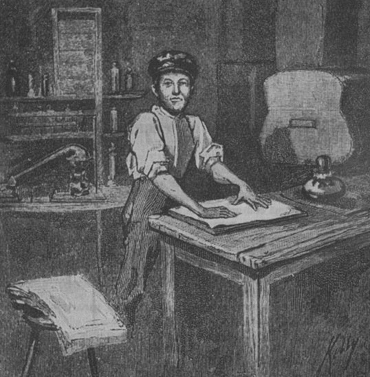
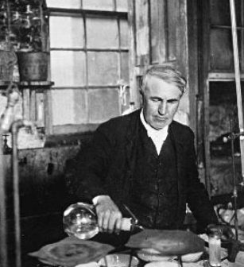

Aprendizaje
Thomas Alva Edison nació el 11 de febrero de 1847 en Ohio, Estados Unidos, a los siete años tuvo que emigrar a Michigan junto a sus padres Samuel Edison y Nancy Elliot donde asistió a la escuela por primera vez. Fue expulsado de las aulas por su desinterés debido a una sordera parcial, su madre asumió la educación del joven incentivándolo a destacar a lo largo de su vida. a los diez años Thomas Édison armo su primer laboratorio en la casa de sus padres donde conoció los principios de la electricidad y la química. a los doce años comenzó a trabajar vendiendo periódicos en un tren que iba de Port Huron a Detroit para poder comprar revistas científicas, libros y aparatos.Aprendió a telegrafiar en una prensa de imprimir de segunda mano y comenzó su propio periódico, el Weekly Herald. A los dieciséis años abandono la casa de sus padres e busca de nuevos horizontes, durante cinco años viajaba de pueblo en pueblo trabajando de telegrafista. Consiguió la obra del científico británico Michael Faraday Experimental Researches in Electricity la cual influyó en su objetivo.
Campo laboral
 Convencido de que su meta profesional era la invención, Edison abandonó el puesto de trabajo que ocupaba y decidió hacerse inventor autónomo, registrando su primera patente en 1868. Un contador eléctrico de votos, el Edison Universal Stock Printer. Se casó en 1871 e instaló un taller pequeño pero bien equipado en Newark, Nueva York, en el que continuó experimentando en el telégrafo. Su mayor contribución en ese campo fue el sistema cuádruple, que permitía transmitir cuatro mensajes telegráficos simultáneamente por una misma línea, dos en un sentido y dos en otro.En 1876 trabajo en mejorar el transmisor telefónico de Alexander Graham Bell, el cual generaba una corriente tan débil que no servía para aplicaciones generales. Sabía que las partículas de grafito, según se mantuvieran más o menos apretadas, influían sobre la resistencia eléctrica, y aplicó esta propiedad para crear un dispositivo que amplificaba considerablemente los sonidos más débiles: el micrófono de gránulos de carbón, que patentó en 1876. La electricidad continuó absorbiendo la mayor parte de su tiempo, trabajando en la producción de cemento y de materias químicas, la separación electromagnética del hierro y la fabricación de baterías y acumuladores para automóviles. Su último gran invento fue el Kinetograph, cuya patente registró en 1891, donde un solo espectador se sentaba frente a una mirilla en una cabina de madera para ver la película, que se iluminaba desde atrás por una lámpara eléctrica.
Deceso
 La actividad de este genial inventor se prolongó más allá de cumplidos los ochenta años, completando la lista de sus realizaciones tecnológicas hasta totalizar las 1.093 patentes que llegó a registrar en vida. La arteriosclerosis, sin embargo, fue minando la salud de este inquieto anciano, cuyo fallecimiento tuvo lugar el 18 de octubre de 1931, en West Orange, Nueva Jersey. Si bien Edison no solo fue pionero de la bombilla incandescente, su invento de 1879 fue el primero en extender su vida útil más allá de los 13 minutos, ofreciendo un producto mejorado y práctico para los consumidores. Una bombilla de mayor duración es visiblemente preferible, pero no todos los aspectos de la eficiencia son tan claros. La respetada solución se encuentra en la etiqueta ENERGY STAR®, la cual indica claramente que es un producto superior probado y no deja ninguna duda en la mente de los consumidores.
La eficiencia energética se ha convertido en un interés clave para muchos, ya que hacen el cambio a una vida "verde". El alcance de las pruebas de productos se está expandiendo progresivamente para satisfacer estos intereses. Al proporcionar múltiples certificaciones de eficiencia energética, Intertek se enorgullece de continuar con la visión de futuro de nuestro gran fundador, Thomas Edison.
La actividad de este genial inventor se prolongó más allá de cumplidos los ochenta años, completando la lista de sus realizaciones tecnológicas hasta totalizar las 1.093 patentes que llegó a registrar en vida. La arteriosclerosis, sin embargo, fue minando la salud de este inquieto anciano, cuyo fallecimiento tuvo lugar el 18 de octubre de 1931, en West Orange, Nueva Jersey. Si bien Edison no solo fue pionero de la bombilla incandescente, su invento de 1879 fue el primero en extender su vida útil más allá de los 13 minutos, ofreciendo un producto mejorado y práctico para los consumidores. Una bombilla de mayor duración es visiblemente preferible, pero no todos los aspectos de la eficiencia son tan claros. La respetada solución se encuentra en la etiqueta ENERGY STAR®, la cual indica claramente que es un producto superior probado y no deja ninguna duda en la mente de los consumidores.
La eficiencia energética se ha convertido en un interés clave para muchos, ya que hacen el cambio a una vida "verde". El alcance de las pruebas de productos se está expandiendo progresivamente para satisfacer estos intereses. Al proporcionar múltiples certificaciones de eficiencia energética, Intertek se enorgullece de continuar con la visión de futuro de nuestro gran fundador, Thomas Edison.